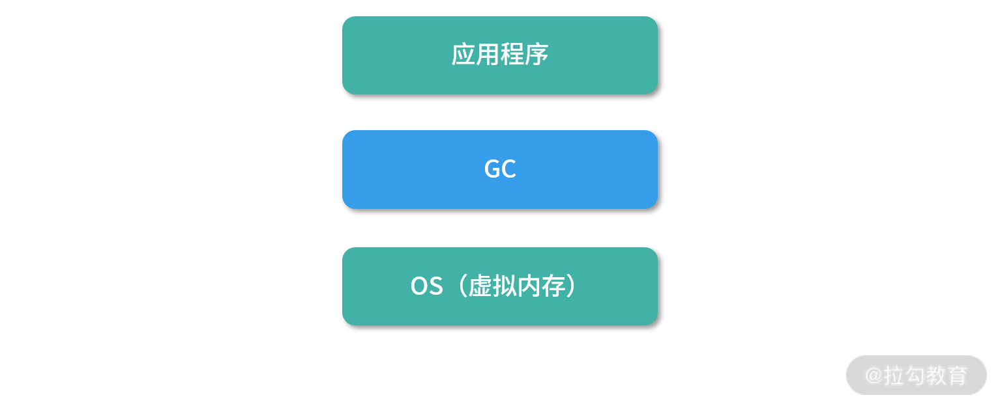
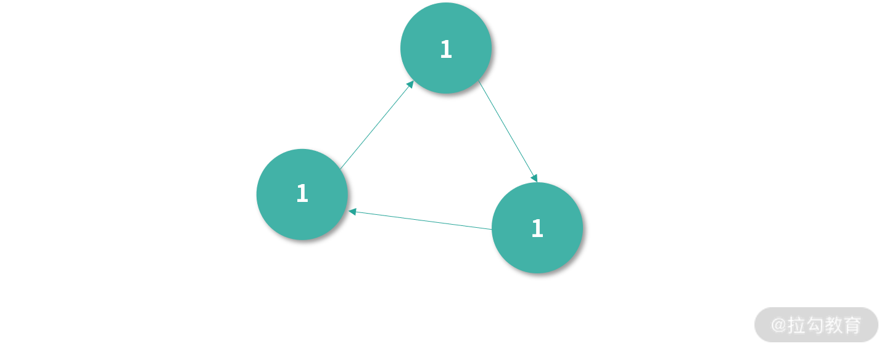
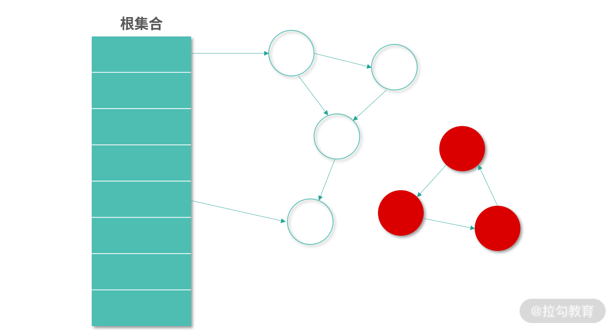
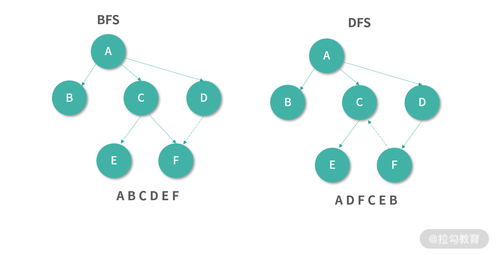

- 00 开篇词 为什么大厂面试必考操作系统？.md.html
- 00 课前必读 构建知识体系，可以这样做！.md.html
- 01 计算机是什么：“如何把程序写好”这个问题是可计算的吗？.md.html
- 02 程序的执行：相比 32 位，64 位的优势是什么？（上）.md.html
- 03 程序的执行：相比 32 位，64 位的优势是什么？（下）.md.html
- 04 构造复杂的程序：将一个递归函数转成非递归函数的通用方法.md.html
- 05 存储器分级：L1 Cache 比内存和 SSD 快多少倍？.md.html
- 05 (1) 加餐 练习题详解（一）.md.html
- 06 目录结构和文件管理指令：rm -rf 指令的作用是？.md.html
- 07 进程、重定向和管道指令：xargs 指令的作用是？.md.html
- 08 用户和权限管理指令： 请简述 Linux 权限划分的原则？.md.html
- 09 Linux 中的网络指令：如何查看一个域名有哪些 NS 记录？.md.html
- 10 软件的安装： 编译安装和包管理器安装有什么优势和劣势？.md.html
- 11 高级技巧之日志分析：利用 Linux 指令分析 Web 日志.md.html
- 12 高级技巧之集群部署：利用 Linux 指令同时在多台机器部署程序.md.html
- 12 (1)加餐 练习题详解（二）.md.html
- 13 操作系统内核：Linux 内核和 Windows 内核有什么区别？.md.html
- 14 用户态和内核态：用户态线程和内核态线程有什么区别？.md.html
- 15 中断和中断向量：Javajs 等语言为什么可以捕获到键盘输入？.md.html
- 16 WinMacUnixLinux 的区别和联系：为什么 Debian 漏洞排名第一还这么多人用？.md.html
- 16 (1)加餐 练习题详解（三）.md.html
- 17 进程和线程：进程的开销比线程大在了哪里？.md.html
- 18 锁、信号量和分布式锁：如何控制同一时间只有 2 个线程运行？.md.html
- 19 乐观锁、区块链：除了上锁还有哪些并发控制方法？.md.html
- 20 线程的调度：线程调度都有哪些方法？.md.html
- 21 哲学家就餐问题：什么情况下会触发饥饿和死锁？.md.html
- 22 进程间通信： 进程间通信都有哪些方法？.md.html
- 23 分析服务的特性：我的服务应该开多少个进程、多少个线程？.md.html
- 23 (1)加餐 练习题详解（四）.md.html
- 24 虚拟内存 ：一个程序最多能使用多少内存？.md.html
- 25 内存管理单元： 什么情况下使用大内存分页？.md.html
- 26 缓存置换算法： LRU 用什么数据结构实现更合理？.md.html
- 27 内存回收上篇：如何解决内存的循环引用问题？.md.html
- 28 内存回收下篇：三色标记-清除算法是怎么回事？.md.html
- 28 (1)加餐 练习题详解（五）.md.html
- 29 Linux 下的各个目录有什么作用？.md.html
- 30 文件系统的底层实现：FAT、NTFS 和 Ext3 有什么区别？.md.html
- 31 数据库文件系统实例：MySQL 中 B 树和 B+ 树有什么区别？.md.html
- 32 HDFS 介绍：分布式文件系统是怎么回事？.md.html
- 32 (1)加餐 练习题详解（六）.md.html
- 33 互联网协议群（TCPIP）：多路复用是怎么回事？.md.html
- 34 UDP 协议：UDP 和 TCP 相比快在哪里？.md.html
- 35 Linux 的 IO 模式：selectpollepoll 有什么区别？.md.html
- 36 公私钥体系和网络安全：什么是中间人攻击？.md.html
- 36 (1)加餐 练习题详解（七）.md.html
- 37 虚拟化技术介绍：VMware 和 Docker 的区别？.md.html
- 38 容器编排技术：如何利用 K8s 和 Docker Swarm 管理微服务？.md.html
- 39 Linux 架构优秀在哪里.md.html
- 40 商业操作系统：电商操作系统是不是一个噱头？.md.html
- 40 (1)加餐 练习题详解（八）.md.html
- 41 结束语 论程序员的发展——信仰、选择和博弈.md.html
- 捐赠
27 内存回收上篇：如何解决内存的循环引用问题？
内存泄漏一直是很多大型系统故障的根源，也是一个面试热点。那么在编程语言层面已经提供了内存回收机制，为什么还会产生内存泄漏呢？
这是因为应用的内存管理一直处于一个和应用程序执行并发的状态，如果应用程序申请内存的速度，超过内存回收的速度，内存就会被用满。当内存用满，操作系统就开始需要频繁地切换页面，进行频繁地磁盘读写。所以我们观察到的系统性能下降，往往是一种突然的崩溃，因为一旦内存被占满，系统性能就开始雪崩式下降。
特别是有时候程序员不懂内存回收的原理，错误地使用内存回收器，导致部分对象没有被回收。而在高并发场景下，每次并发都产生一点不能回收的内存，不用太长时间内存就满了，这就是泄漏通常的成因。
这一块知识点关联着很多常见的面试题，比如。
- 这一讲关联的题目：如何解决循环引用问题？
- 下节课关联的题目：三色标记-清除算法的工作原理？生代算法等。
- 还有一些题目会考察你对内存回收器整体的理解，比如如何在吞吐量、足迹和暂停时间之间选择？
接下来，我会用 27 和 28 两讲和你探讨内存回收技术，把这些问题一网打尽。
什么是 GC
通常意义上我们说的垃圾回收器（Garbage Collector，GC），和多数同学的理解会有出入。你可能认为 GC 是做内存回收用的模块，而事实上程序语言提供的 GC 往往是应用的实际内存管理者。刚刚入门咱们就遇到了一个容易出现理解偏差的问题，所以 GC 是值得花时间细学的。

如上图所示，一方面 GC 要承接操作系统虚拟内存的架构，另一方面 GC 还要为应用提供内存管理。GC 有一个含义，就是 Garbage Collection 内存回收的具体动作。无论是名词的回收器，还是动词的回收行为，在下文中我都称作 GC。
下面我们具体来看一下 GC 都需要承担哪些“工作”，这里我总结为以下 4 种。
- GC 要和操作系统进行交互，负责申请内存，并把不用的内存还给操作系统（释放内存）。
- 应用会向 GC 申请内存。
- GC 要承担我们通常意义上说的垃圾回收能力，标记不用的对象，并回收他们。
- GC 还需要针对应用特性进行动态的优化。
所以现在程序语言实现的 GC 模块通常是实际负责应用内存管理的模块。在程序语言实现 GC 的时候，会关注下面这几个指标。
- 吞吐量（Throughput）：执行程序（不包括 GC 执行的时间）和总是间的占比。注意这个吞吐量和通常意义上应用去处理作业的吞吐量是不一样的，这是从 GC 的角度去看应用。只要不在 GC，就认为是吞吐量的一部分。
- 足迹（FootPrint）： 一个程序使用了多少硬件的资源，也称作程序在硬件上的足迹。GC 里面说的足迹，通常就是应用对内存的占用情况。比如说应用运行需要 2G 内存，但是好的 GC 算法能够帮助我们减少 500MB 的内存使用，满足足迹这个指标。
- 暂停时间（Pause Time）： GC 执行的时候，通常需要停下应用（避免同步问题），这称为 Stop The World，或者暂停。不同应用对某次内存回收可以暂停的时间需求是不同的，比如说一个游戏应用，暂停了几毫秒用户都可能有很大意见；而看网页的用户，稍微慢了几毫秒是没有感觉的。
GC 目标的思考
如果单纯从让 GC 尽快把工作做完的角度来讲，其实是提升吞吐量。比如利用好多核优势就是一种最直观的方法。
因为涉及并行计算，我这里给你讲讲并行计算领域非常重要的阿姆达定律，这个定律用来衡量并行计算对原有算法的改进，公式如下：
S = 1 / (1- P)
你现在看到的是一个简化版的阿姆达定律，P 是任务中可以并发执行部分的占比，S 是并行带来的理论提速倍数的极限。比如说 P 是 0.9，代入公式可得：
S = 1 / （1 - 0.9） = 10
上面表达式代表着有 90% 的任务可以并行，只有 10% 的任务不能够并行。假设我们拥有无限多的 CPU 去分担 90% 可以并行的任务，其实就相当于并行的任务可以在非常短的时间内完成。但是还有 10% 的任务不能并行，因此理论极限是 1⁄0.1=10 倍。
通常我们设计 GC，都希望它能够支持并行处理任务。因为 GC 本身也有着繁重的工作量，需要扫描所有的对象，对内存进行标记清除和整理等。
经过上述分析，那么我们在设计算法的时候是不是应该尽量做到高并发呢？
很可惜并不是这样。如果算法支持的并发度非常高，那么和单线程算法相比，它也会带来更多的其他开销。比如任务拆分的开销、解决同步问题的开销，还有就是空间开销，GC 领域空间开销通常称为 FootPrint。理想情况下当然是核越多越好，但是如果考虑计算本身的成本，就需要找到折中的方案。
还有一个问题是，GC 往往不能拥有太长的暂停时间（Pause Time），因为 GC 和应用是并发的执行。如果 GC 导致应用暂停（Stop The World，STL）太久，那么对有的应用来说是灾难性的。 比如说你用鼠标的时候，如果突然卡了你会很抓狂。如果一个应用提供给百万级的用户用，假设这个应用帮每个用户每天节省了 1s 的等待时间，那么按照乔布斯的说法每天就为用户节省了 11 天的时间，每年是 11 年——5 年就相当于拯救了一条生命。
如果暂停时间只允许很短，那么 GC 和应用的交替就需要非常频繁。这对 GC 算法要求就会上升，因为每次用户程序执行后，会产生新的变化，甚至会对已有的 GC 结果产生影响。后面我们在讨论标记-清除算法的时候，你会感受到这种情况。
所以说，吞吐量高，不代表暂停时间少，也不代表空间使用（FootPrint）小。 同样的，使用空间小的 GC 算法，吞吐量反而也会下降。正因为三者之间存在类似相同成本代价下不可兼得的关系，往往编程语言会提供参数让你选择根据自己的应用特性决定 GC 行为。
引用计数算法（Reference Counter）
接下来我们说说，具体怎么去实现 GC。实现 GC 最简单的方案叫作引用计数，下图中节点的引用计数是 2，代表有两个节点都引用了它。

如果一个节点的引用计数是 0，就意味着没有任何一个节点引用它——此时，理论上这个节点应该被回收。GC 不断扫描引用计数为 0 的节点进行回收，就构成了最简单的一个内存回收算法。
但是，这个算法可能会出现下图中循环引用的问题（我们写程序的过程中经常会遇到这样的引用关系）。下图中三个节点，因为循环引用，引用计数都是 1。

引用计数是 1，因此就算这 3 个对象不会再使用了，GC 不会回收它们。
另一个考虑是在多线程环境下引用计数的算法一旦算错 1 次（比如因为没有处理好竞争条件），那么就无法再纠正了。而且处理竞争条件本身也比较耗费性能。
还有就是引用计数法回收内存会产生碎片，当然碎片不是只有引用计数法才有的问题，所有的 GC 都需要面对碎片。下图中内存回收的碎片可以通过整理的方式，清理出更多空间出来。关于内存空间的碎片，下一讲会有专门的一个小节讨论。

综上，引用计数法出错概率大，比如我们编程时会有对象的循环引用；另一方面，引用计数法容错能力差，一旦计算错了，就会导致内存永久无法被回收，因此我们需要更好的方式。
Root Tracing 算法
下面我再给你介绍一种更好的方式—— Root Tracing 算法。这是一类算法，后面我们会讲解的标记-清除算法和 3 色标记-清除算法都属于这一类。
Root Tracing 的原理是：从引用路径上，如果一个对象的引用链中包括一个根对象（Root Object），那么这个对象就是活动的。根对象是所有引用关系的源头。比如用户在栈中创建的对象指针；程序启动之初导入数据区的全局对象等。在 Java 中根对象就包括在栈上创建指向堆的对象；JVM 的一些元数据，包括 Method Area 中的对象等。

在 Root Tracing 工作过程中，如果一个对象和根对象间有连通路径，也就是从根节点开始遍历可以找到这个对象，代表有对象可以引用到这个对象，那么这个节点就不需要被回收。所以算法的本质还是引用，只不过判断条件从引用计数变成了有根对象的引用链。
如果一个对象从根对象不可达，那么这个对象就应该被回收，即便这个对象存在循环引用。可以看到，上图中红色的 3 个对象循环引用，并且到根集合没有引用链，因此需要被回收。这样就解决了循环引用的问题。
Root Tracing 的容错性很好，GC 通过不断地执行 Root Tracing 算法找到需要回收的元素。如果在这个过程中，有一些本来应该回收的元素没有被计算出（比如并发原因），也不会导致这些对象永久无法回收。因为在下次执行 Root Tracing 的时候，GC 就会通过执行 Root Tracing 算法找到这些元素。不像引用计数法，一旦算错就很难恢复。
标记-清除（Mark Sweep）算法
下面我为你具体介绍一种 Root Tracing 的算法， 就是标记清除-算法。标记-清除算法中，用白色代表一种不确定的状态：可能被回收。 黑色代表一种确定的状态：不会被回收。算法的实现，就是为所有的对象染色。算法执行结束后，所有是白色的对象就需要被回收。
算法实现过程中，假设有两个全局变量是已知的：
- heapSet 中拥有所有对象
- rootSet 中拥有所有 Root Object
算法执行的第一步，就是将所有的对象染成白色，代码如下：
for obj in heapSet {
obj.color = white
}
接下来我们定义一个标记函数，它会递归地将一个对象的所有子对象染成黑色，代码如下：
func mark(obj) {
if obj.color == white {
obj.color = black
for v in references(obj) {
mark(v)
}
}
}
补充知识
上面的 mark 函数对 obj 进行了深度优先搜索。深度优先搜索，就是自然的递归序。随着递归函数执行，遇到子元素就遍历子元素，就构成了天然的深度优先搜索。还有一个相对的概念是广度优先搜索（Breadth First Serach），如果你不知道深度优先搜索和广度优先搜索，可以看下我下面的图例。

上图中，深度优先搜索优先遍历完整的子树（递归），广度优先搜索优先遍历所有的子节点（逐层）。
然后我们从所有的 Root Object 开始执行 mark 函数：
for root in rootSet {
mark(root)
}
以上程序执行结束后，所有和 Root Object 连通的对象都已经被染成了黑色。然后我们遍历整个 heapSet 找到白色的对象进行回收，这一步开始是清除（Sweep）阶段，以上是标记（Mark）阶段。
for obj in heapSet {
if obj.color == white {
free(obj)
}
}
以上算法就是一个简单的标记-清除算法。相比引用计数，这个算法不需要维护状态。算法执行开始所有节点都被标记了一遍。结束的时候，算法找到的垃圾就被清除了。 算法有两个阶段，标记阶段（Mark），还有清除阶段（Sweep），因此被称为标记-清除算法。
这里请你思考：如果上面的 GC 程序在某个时刻暂停了下来，然后开始执行用户程序。如果用户程序删除了对某个已经标记为黑色对象的所有引用，用户程序没办法通知 GC 程序。这个节点就会变成浮动垃圾（Floating Garbage），需要等待下一个 GC 程序执行。

假设用户程序和 GC 交替执行，用户程序不断进行修改（Mutation），而 GC 不断执行标记-清除算法。那么这中间会产生大量浮动垃圾影响 GC 的效果。
另一方面，考虑到 GC 是一个非常消耗性能程序，在某些情况下，我们希望 GC 能够增量回收。 比如说，用户仅仅是高频删除了一部分对象，那么是否可以考虑设计不需要从整个 Root 集合进行遍历，而是增量的只处理最近这一批变更的算法呢？答案是可以的，我们平时可以多执行增量 GC，偶尔执行一次全量 GC。具体增量的方式会在下一讲为你讲解。
总结
讨论到这里，相信你已经对 GC 有了一个大致的认识，但是具体到不同的场景如何设计 GC 算法，比如上面提到的标记-清除算法的缺陷，该如何去弥补呢？ 还有在高并发场景应该如何选择 GC 算法呢？当你拿到一个 GC 工具，又应该如何去设置参数，调整计算资源和存储资源比例呢？这些问题， 你可以先在自己脑海中思考，然后我会在下一讲为你讲解更好的方案。
© 2019 - 2023 Liangliang Lee. Powered by gin and hexo-theme-book.